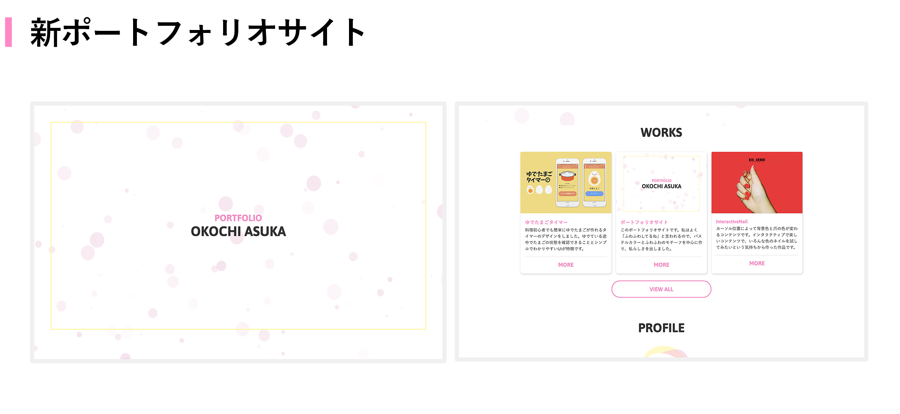
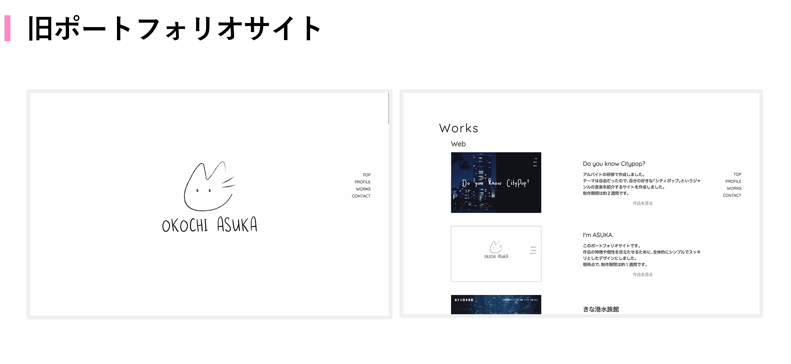
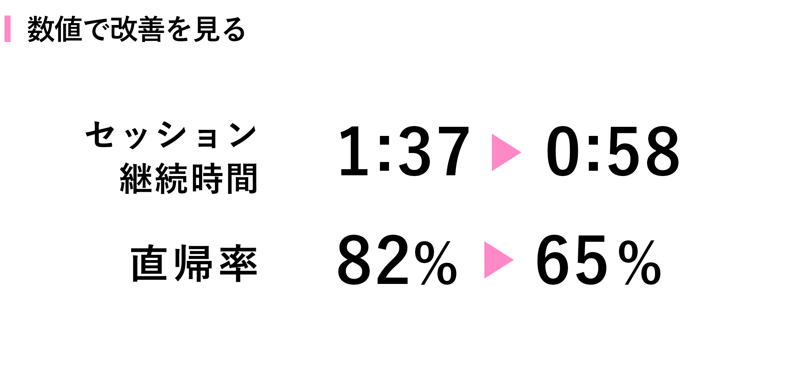
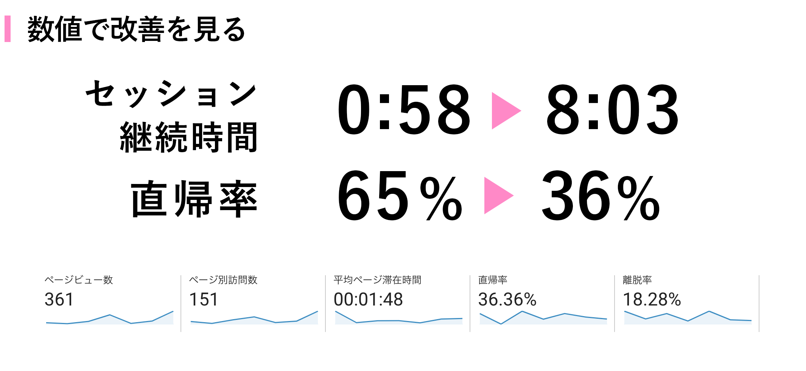

どんなポートフォリオ?
自分のことや作品について知ってもらうためのポートフォリオサイトです。
 私はよく「ふわふわしている」と言われるので、ふわふわとしたモチーフをトップに散りばめ、パステルカラーや丸いフォントを用いることで私の雰囲気を表現しました。
実装はHTML,CSS,JSを用いて作っており、jQueryを使わないことで少しでも読み込み速度が早くなるように気をつけました。
トップのふわふわとした丸いモチーフは
bubbly-bgを用いて表現しました。
改善
2018年7月に作成した
ポートフォリオサイトの良いところ・改善点を元に今回のポートフォリオサイトを作成しました。
 まず、前回のポートフォリオサイトは「私らしさ」が足りなかったため、自分らしさを表すことが出来るデザインを作りました。
また、個別ページがないことから作品についての詳細が足りなかったり、作品を増やした時にページが長くなってしまうことで見にくくなるなど、作品ページの改善点が多くあったため、現在のような形にしました。
結果と仮説（2019年6月時点）
これらの改善を行い、GoogleAnalyticsで公開から1ヶ月の滞在時間や直帰率を見た結果、平均セッション時間は1分37秒から0分58秒に、直帰率は81.89%から65.12%へと変化しました。

セッション継続時間の減少は作品ページから直接作品のリンクへ飛ぶように設定していたことから起こったことだと思うので、今後はこのような作品個別のページを設置することでセッション継続時間が長くなるかどうか見て行こうと思います。
直帰率の減少は恐らく作品一覧のページを作ったことによるものだと思います。トップページから作品一覧のページに移動した人が約50%いるので、今後も作品の質を上げたり個別ページに移動してもらえるような内容にしたりすることで改善を続けていき直帰率を減らしていきたいです。
結果と考察（2019年12月時点）
個別ページの作成と作品のブラッシュアップを行なった結果、セッション継続時間は0分58秒から8分03秒に、直帰率は65.12%から36.36%に改善しました。

これは、多くの人が作品の個別ページや作品一覧を閲覧し、長く滞在していることが一番大きな要因かと思われます。
6月に立てた仮説が検証できてよかったです。
また、企業の方にポートフォリオの添削をお願いしたことや友人がじっくりと見てくれたというのも要因の1つかと思われるため、今後も数値をキープもしくは今以上に良くなるように改善を続けていきたいです。